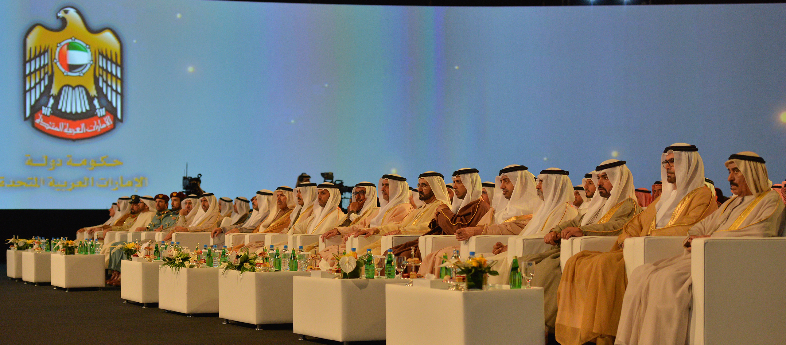
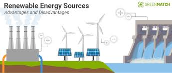
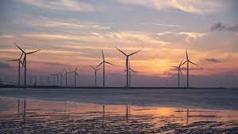
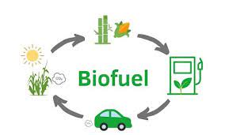

Sustainability and its development in the UAE
"We will look at the future with optimism even when the last barrel of oil leaves, because our youth, in whom we have invested, comprise our real wealth.”
– Sheikh Saif bin Zayed, Deputy Prime Minister and Minister of
the Interior
The UAE has quickly asserted itself as a world leader in sustainability over the past decade. Through collaboration with U.S partners, the U.A.E is addressing climate change by focusing on alternative energy sources; including ambitious new initiatives, including the largest solar energy project in the world - plus one of the world's most sustainable urban
communities out there.
Content:
- Energy efficiency in the U.A.E
- Solar Power
- Wind Power
- Biofuels
- Nuclear Energy
- Masdar City - Planned to be the Most Sustainable City, Ever
- Conclusion
1. Energy Efficiency in the UAE

There is a multitude of incentives behind the steadily increasing demand of efficiency in power consumption and renewable energy. A few of them are:
- Climate change, reinforcing the desire to reduce emmisions
- The neative effects of using fossil fuels to produce electricity
- The increased demand for conventional energy sources
- The desire to provide more sustainable products and services
To paraphrase the UAE's government website: in July 4th 2014, the Ministry of Energy and Infrastructure established a new department for energy conservation and efficiency- this decision was made only when the importance of energy renewability was realised.
2. Solar Power

The United Arab Emirates has ranked 3rd globally in the production of concentrated solar power in 2013. The government's estimated savings are 1 Billion USD
As part of Dubai Clean Energy Strategy to generate 75 per cent of Dubai's power from clean energy by 2050, Dubai will build the largest Concentrated Solar Power (CSP) project on a single site in the world, which is expected to begin power generation within the next five years.
The project will surpass the existing world's largest CSP tower in Morocco that has a power generating capacity of 150MW.
3. Wind power

According to The Asia Wind Association, The UAE has been a driving force in funding wind power overseas, but the green energy source has found itself in the doldrums closer to home. The country's obvious solar potential has also had the effect of putting other renewables in the shade. That could be about to change as attention focuses on the wind potential offered by locations such as the power-hungry Northern Emirates and islands such as Sir Bani Yas, while at the same time technology to produce power from lower wind speeds improves. Such technological developments are especially relevant for the UAE, which typically lacks the gales that drive the largest of existing wind farms in Europe and North America.
Masdar, Abu Dhabi's eight-year-old renewable energy company, has taken a lead in investing in wind projects overseas. After wind-mapping the country, it is also scouting possible locations for turbines at home. The Mubadala Development unit has more than US$1 billion invested in energy projects around the world. It is also a key player in the emirate's attempt to achieve 7 per cent renewable energy capacity by 2020. Dubai's renewable target is 5 per cent.
""We are an oil producing nation but we are today focusing on renewable energy. Though there are many questions raised, the answer is very clear. We want to build the future like we build our present."”
– Sheikh Abdullah bin Zayed Al Nahyan, Minister of Foreign Affairs
4. Biofuels

According to MDPI's definition of biomass, which currently satisfies 12% of the world's energy needs, is an organic material that is obtained from living matter such as plants, trees, algae, organic waste, etc.; this is exclusive of fossil fuels. In the Middle East and North Africa (MENA) region, there is a growing interest in bio-energy synthesized from readily available, non-competing crops such as date palm waste.
In the Middle East and North Africa (MENA) region, there is a growing interest in bio-energy synthesized from readily available, non-competing crops such as date palm waste
5. Nuclear energy

The UAE has embarked upon a mission relating to nuclear power, not without consulting the I.A.E.A - plus recieving massive public support.
Citing world-nuclear.org , it accepted a $20 billion bid from a South Korean consortium to build four commercial nuclear power reactors, total 5.6 GWe, by 2020 at Barakah.
Unit 1 of the country's first nuclear power plant was connected to the grid in August 2020, followed by unit 2 in September 2021 and unit 3 in October 2022.
6. Masdar City

According to the official Masdar City Website, in 2008 the city embarked on a journey to develop one of the world's most sustainable cities - it is a pioneer in sustainability and a hub for research and development, spearheading the innovations to realize greener, more sustainable urban living. Masdar City is home to a rapidly growing clean-tech cluster, business free zone and residential neighborhood with restaurants, shops, and public green spaces.
7. Conclusion

The future looks brighter than ever for energy conservation in the Middle East, as the United Arab Emirates employes a myriad of methods for getting the most "bang" for their buck.
My ass hurts